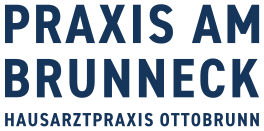
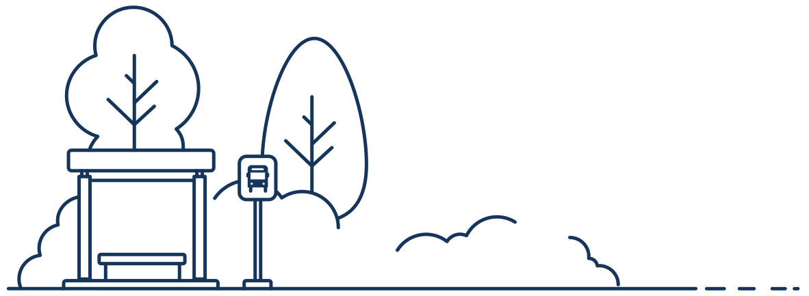

SprechzeitenHeute
Montag
08.30 – 12.30
15.00 – 17.30
Dr. med. Agnes Eggerdinger
Fachärztin für Allgemeinmedizin
Carolin Bräuer
Fachärztin für Innere Medizin

08.30 – 12.30
15.00 – 17.30
08.30 – 14.30
08.30 – 12.00
08.30 – 12.30
15.00 – 17.30
08.30 – 12.00
Wir sind zu den oben stehenden Zeiten für Sie da.
Bitte vereinbaren Sie Ihren Termin telefonisch: T. 089/60 51 56
In dringenden Fällen rufen Sie uns möglichst früh am Tag an.
Alle Kassen
Die neue Hausarztpraxis in Ottobrunn steht für eine moderne, persönliche und verlässliche medizinische Betreuung. Wir begleiten Sie mit fachlicher Sorgfalt, verständlicher Beratung und einem offenen Blick für den Menschen.
Station: Ottobrunn, Erlenstr.
Praxis: Am Brunneck 10,
ca. 2 min zu Fuß
